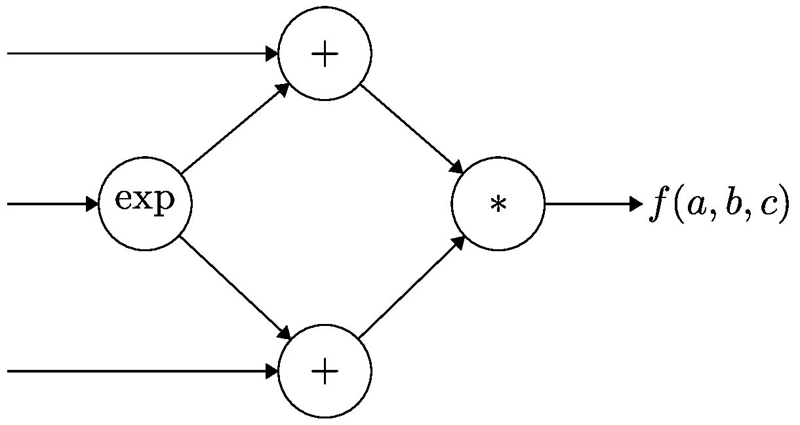
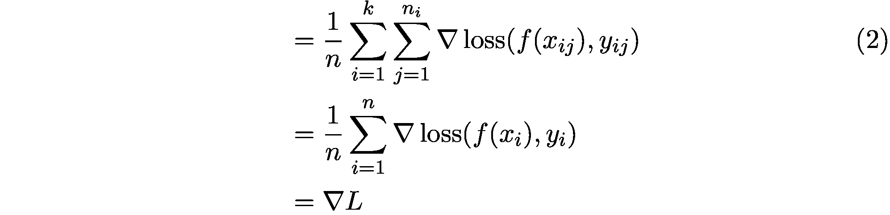
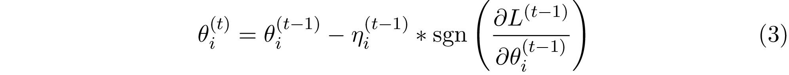
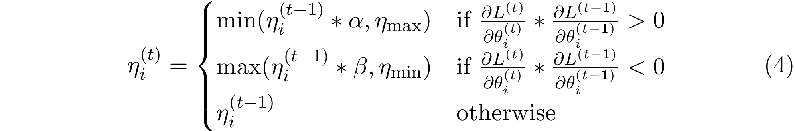

随手笔记，针对目前现有的几个大型应用案例的分析。
WeBank联邦学习应用与研究
原因：
各种隐私保护法规导致数据孤岛愈发严重，联邦学习致力于解决数据孤岛问题 [14-15] 数据安全，信息孤岛
概述：
- 各方数据保留在本地，不泄露隐私也不违反法规
- 多个参与者联合数据建立虚拟的共有模型，并且共同获益的体系
- 在联邦学习的体系下，各个参与者的身份和地位相同
- 保证数据的用户对齐或特征对齐，联邦学习的建模效果和将整个数据集放在一处建模的效果相同
- 数据的用户或特征不对齐时，迁移学习也可以在数据间通过交换加密参数达到知识迁移的效果
分类
按两个数据中心的用户数据重叠程度划分
数据集D(用户$X_i$，用户特征$X_i^t$)
横向联邦学习
用户特征$X^t$重叠较大，而用户$X$重叠较小
数据集按横向用户纬度$X_i$ 进行划分，使用双方用户特征相同而用户不完全相同的数据进行训练
=> 扩展数据集
纵向联邦学习
用户$X$重叠较大，用户特征重$X^t$叠较小
数据集按纵向用户特征纬度$X_i^t$ 进行划分，使用双方用户相同而用户特征不完全相同的部分数据进行训练
=> 扩展用户特征信息
联邦迁移学习
用户$X$和用户特征$X^t$重叠均较小
使用迁移学习进行训练
三种学习方式由于数据划分方式的不同，应该是面向不同场景的模型，但实际场景中，三种场景可能相互交叉，如何相互兼容？
流程
纵向联邦学习，两个数据中心A,B
用户样本加密对齐：筛选出A,B共有用户
加密模型训练：引入协作者C
- C向A,B分发公匙
- A,B利用公匙加密梯度计算结果
- A,B分别利用加密信息进行计算，并汇总给C ？？A,B怎么使用加密信息
- C解密汇总信息，分别传回给A,B，A,B各种更新模型
效果激励：区块链记录，提供数据多的机构其模型的效果也更好 ？？不是平等吗，奖励贡献数据多的机构，体现在哪
提供的数据多的机构会看到模型的效果也更好，这体现在对自己机构的贡献和对他人的贡献。这些模型对他人效果在联邦机制上以分给各个机构反馈，并继续激励更多机构加入这一数据联邦
区别
与差分隐私理论比较：联邦学习传输中间计算参数数据，而差分隐私等理论会传输原始数据
与分布式机器学习比较：分布式机器学习的参数服务器对各工作节点拥有完全控制权，而联邦学习各工作节点有自治权。分布式机器学习主要通过分布式调配提高计算效率和模型性能，而联邦学习主要面向数据保护。
与联邦数据库比较：联邦数据库主要用于多个异构数据库之间的管理和操作，不涉及用户数据保护及上层应用
隐私保护
多方安全计算 Secure Multi-party Computation(MPC)
参与方分别拥有各自的私有数据，在不泄露各自私有数据的情况下，分别计算关于公共函数的结果，只暴露经过加密计算的最终结果。
加密计算方法大致可分为基于噪音的方法和不基于噪音的方法
- 基于噪音的计算方法：对输入进行干扰，对参数进行干扰，对结果进行干扰等三种类型，典型的是差分隐私
- 不基于噪音的计算方法：通过密码学方法将数据编码或加密，然后使用加密后的数据进行计算，典型的有同态加密，混淆电路，秘密共享等
同态加密 Homomorphic Encryption(HE)
将原文加密，在密文上进行运算，而不影响解密。
基本公式：$c=b+2x+kp$ $b$为原文（0,1），$c$为密文，$x, k$为随机数，$k$为奇数密钥
$2x$为偶数噪音，$c$ 获取不了$b$的信息。$c$ mod $p$ = $b+2x$ mod $p$ ，为$2x$ 为偶数，则可根据$b+2x$ mod $p$ 的奇偶性判断$b$，完成解密。
$$
c_1=b_1+2x_1+k_1p \
c-2=b_2+2x_2+k_2p \
c_1+c_2=(b_1\oplus b_2) + 2(x_1+x_2)+(k_1+k_2)p=(b_1\oplus b_2)+2x+kp \
c_1 \times c_2=(b_1 \times b_2) + 2(b_1x_2+b_2x_1+2x_1x_2)+kp=(b_1 \times b_2)+2x + kp
$$
该公式具有良好的加法同态和乘法同态，只不过乘法同态时$x$会指数型增长，最终会影响解密。后续为了解决$x$的增长问题，在一定加密计算的轮次后，对$c$ 和$p$ 进行一次加密，用该次加密后的数据进行解密还原$b$，消解$x$ 的增长误差。姚式混淆电路 Yao’s Garbled Circuit
使用由2输入门组成的布尔电路进行运算，Alice，Bob拥有各自的私有数据
- Alice随机生成密钥和标签加密电路真值表，01真值表变成了加密的随机表（加密电路），每个值对应一个标签（类字符串）
- Alice将加密电路及它的加密输入对应的标签发给Bob
- Bob根据自己的输入挑选一个标签对加密电路进行解密，得到相应值加密后对应的label，将其发给Alice ？？这里Bob是如何保证自己选择的标签是正确的
- Alice根据返回的label得知结果是0还是1
秘密共享 Secret Sharing
n个参与者，每个参与者都只拿到原始数据的一部分，一个或少数几个参与者联合都无法还原出原始数据。每个参与者将自己拿到的数据进行相应的计算，结果仍然秘密共享于各方，待需要时收回。满足加法同态。
常用(t，n)阈值秘密共享，使用多项式获得子数据项用于分发。关于乘法同态则使用随机乘积元组的方法。
差分隐私 Differential Privacy(DP)
对于相邻数据集(数据只有细微的差别)，使用随机化算法，其输出的分布应该基本一致（得到特定输出$O$ 的概率差别不大）
Firefox & Berlin & URL prediction Florian Hartmann.
该文章与上面WeBank的联邦学习项目关注的点不同。WeBank关注解决不同企业机构的数据联合进行学习。该文章主要关注于联合个人数据，运行于智能手机，个人电脑，物联设备的联邦学习方案。该文章作者柏林大学的教授与Firefox公司合作，使用Pytorch设计了一个预测用户URL点击的联邦分布模型，以用户的Firefox浏览器为终端用户。
简易流程
- 服务器初始化模型
- 服务器分发参数给用户
- 用户在本地计算并将更新信息上传
- 服务器综合更新信息，更新模型参数。
- 进入下一次迭代，回到1
难点
- 超大范围，数量级的用户（设备）
- 用户数据的不平衡
- 异构数据分布
- 不稳定的通信条件
- 参数更新带来的通信压力
基础背景
梯度下降法
- GD 最小化损失函数，通过梯度推导参数更新方向（变大还是变小）
- SGD 当数据量大，参数多时，计算全局梯度太过耗费计算资源。通过计算数据集中部分数据的梯度同样可以正确推导更新方向
- mini-batch GD 每次都随机选择数据进行梯度计算，存在方差问题，即使用部分数据，而忽略了其他数据的信息。通过将训练集分为多个子集，同时使用GPU的并行计算能力，每次选择几个子集并行计算梯度。
计算图

将计算公式的变量，常量，计算操作使用一个个点表示，组合为一个有向图。
- 对于同一变量，同公式，只占用一个点
- 图节点可以保存中间计算结果
- 由于保存有中间结果，链式运算更便捷
- 反向计算更有优势，可以一次计算出所有的偏导值
联合优化
- 偏差优化
联邦学习的隐私机制要求，更多的计算其实放在用户节点，实际意义上的分布式训练。服务器端为了更有效的估计更新值，每次迭代只使用部分用户的特征数据，以$n_i / n$ 的采样概率筛选用户，可以证明用户训练数据的分布对估计量对偏差没有影响，但由于各用户的独立性和分布式训练导致很难确保参与训练的用户特征数据具有相似的估计分布，会导致较大的方差。

- 方差优化
针对存在的方差问题，可以通过一些采样技术减小方差。常用的有分层抽样和聚类抽样。
- 分层抽样：将所有样本用户按用户特征划分阶层，训练时按一定比例从各层随机抽取样本
- 聚类抽样：将所有样本用户归并成若干个互不交叉，互不重复的群，各群内差异大，群间差异小。训练时以群为抽样单位抽取样本。
流式训练
将参与训练的用户看作数据流，在数据流上进行训练，新加入的数据仅使用一次即丢弃，即时通过下一刻的输入进行验证。每一个新数据都是上一次的验证集，也参与下一次的更新。
RProp
对于联邦学习模型，其不收集任何数据，在部署之前，是没有数据可供训练的，也就没有相关的梯度信息，梯度大小在训练过程中可能会有较大的波动。 RProp作为一种动态适应学习速率的梯度下降法，它仅使用梯度分量的符号，忽略梯度的幅度。


在RProp的迭代中，通过比较当前和上一次迭代的偏导数的符号确定学习率。其中$\alpha > 1 > \beta$ 缩放步长，具体取决于偏导数的符号，然后使用$\eta_\max$和$\eta_\min$ 限制步长，以免步长变得太大或太小。
因此各用户将梯度的更新信息传递到服务器，服务器通过平均梯度值再通过上面的公式更新学习率和权重。但RProp对随机噪声高度敏感，若参与用户太少，则可能导致更高的方差。
通信
对于联邦学习，由于将训练过程分散到了各个终端，用户只有较少的训练数据，不太占用太多的计算资源，反而由于终端通信的问题，参数传递成为了一个比较重要的问题。这就需要对待传递的参数进行一定程度的压缩，减少所需带宽。
常用的方法是使用稀疏蒙版强制进行稀疏更新，即仅允许每个用户更新一定数量的权重值。每个客户的使用不同的随机种子，以概率p从伯努利分布中采样与权重矩阵w相同大小的随机掩码矩阵M
$$
M_{ij} \sim Bernoulli(p) \
p=\frac {\log m} m \
\bar H=(H\bullet M) \times \frac 1 x \
(A \bullet B){ij}=A{ij}\bullet B_{ij}
$$
客户端将随机种子给服务器，服务器根据种子重建掩码矩阵，确定每个用户的参数更新矩阵，用户的每次更新，只更新部分参数
进一步的，对于参数矩阵$H$ 概率量化，可以有效减少传输所需带宽。即将常规的浮点数参数转化为0，1二值，原本一个浮点数需要4字节的空间，而二值只需要1位bit，大大减少了空间需求。当然，这一措施只能针对大多用户具有相似的分布时才能生效。
隐私保护
在上一篇笔记中也大致说了现在常用的几个隐私保护技术，在这篇文章中，作者使用的就是差分隐私。
$$
P[Q(D_1) \in R] \le e^\epsilon * P[Q(D_2) \in R] + \delta
$$
对相邻数据集$D_1,D_2$ ,执行统计查询Q，他们的结果具有相同的统计分布，差距小于$e^\epsilon$，其中$\epsilon$ 是超参数（差分级别）。即向任一数据集额外添加一点数据不能改变查询结果。同时为了避免恶意用户通过多用户估计的方式估计其他用户数据，额外添加了随机噪声$\delta$ 。
$$
\sigma \le c_2 \frac {q\sqrt {T\log {\frac 1 \delta}}} {\epsilon}
$$
在这个基础上，实现了基于SGD的学习算法，在每T次迭代中计算梯度估计值，使用概率q对用户进行采样，每次迭代时将从$N(0,\sigma^2)$采样的噪声添加到估计值，计算下一次权重时减去该估计值。
个性化
对于新加入的用户，由于其之前没有数据，没有参与训练，为了将其加入训练网络并针对性的优化模型，通常使用迁移学习的方法完成这一步。
- 使用联邦学习，所有用户共同训练一个中心模型
- 使用迁移学习的技术，各用户在本地构建个性化向量微调其模型。
- 当有新用户加入时，直接使用中心模型，后续迭代过程中，构建自己的个性化向量微调模型。
各用户的个性化向量本地保持，不与服务器交互。在一定的初始用户共同完成中心模型的训练，达到一定的质量后，模型优化和个性化向量的优化交替执行。每2次迭代，使用计算个性化损失的偏导数并进行更新，随着不断迭代，该向量将紧密反映用户的偏好。在对模型参数进行更新时，将个性化向量作为附加输入优化模型权重。
Google AI & Gborad & Next-word prediction
Google的这篇关于联邦学习的文章主要也是面向用户toC的。他们使用Tensorflow构建联邦学习框架，使用Android平台的移动手机用户为训练终端，设计关于Gboard的单词预测任务。
简易流程
在他们设计架构中，分为终端设备和服务器两个部分，终端设备训练基于本地数据进行训练，服务器集中更新模型参数，通过一些通信策略和安全策略保证分布式的通信问题和数据安全。
- 服务器挑选并通知合适的设备参与模型训练，等待设备的确定
- 服务器检查服务器持久化存储的模型
- 服务器将模型参数和配置以及训练任务分发给设备
- 设备基于本地数据进行训练，并将更新参数返回
- 服务器聚合收到的更新数据并更新到模型
- 存储更新后的基础模型
配置
模型
对于单词预测任务，他们选用了基于长短期记忆(LSTM)的递归神经网络(RNN)模型（输入耦合忘记门CIFG）。实验组使用了大概150万用户训练了6亿句话进行训练，对照组在服务器环境下使用服务器日志信息，大约75亿个句子进行训练。

最后结果显示实验组和对照组的准确率差不多，0.1%的差别。但联邦模型对数据安全方面更有利。
服务器
全局模型首先在服务器上生成随机初始化或由一些可用的代理数据进行预训练。根据数据安全的限制及可以证明的更新有效性，每轮选择100个左右的设备参与训练，考虑设备可能存在的一些断联和不符合条件的情况，预选阶段会预选130%的设备数。获取来自客户端的更新参数后，每个设备的返回值以一定的权重参与本次权重更新（在本次单词预测任务中，以用户输入的单词量$n_k$作为参考）。
$$
w_{t+1}=\sum_{k=1}^K {\frac {n_k}{N} w_{t+1}^k}
$$
使用Federated Averaging算法来组合客户端更新生成新的全局模型。

由于用户端设备的不确定性和数据安全协议，需要服务器对参与训练的设备及任务的分配进行一定的配置，即实现动态资源管理和负载均衡策略。
该模型中选择使用多方聚合保证数据安全，即当收集到足够数量的用户更新数据，才能对数据进行解密。该协议流程分为四轮，前两轮为准备阶段，属于设备的数据预处理阶段，
客户端
由于训练过程需要大量的计算资源和内存资源，且极为耗电。因此对训练设备的性能有一定要求：有至少2G内存，空闲状状态，充电并且处于Wi-Fi网络下。这也从侧面限制同一时间内参与训练的设备数量会较少，但同时也更易于进行同步控制。
同样由于客户端设备的限制，要求任务模型不能太大，在一定程度上限制了模型的性能，要求更好的压缩技术。Google团队最终交付给GBorad设备的模型大小为1.4M。
客户端设备在训练时，根据当前模型$w_t$，使用随机梯度下降法(SGD)进行训练平均梯度$g_k$，学习率$\epsilon$固定。本地客户端更新值$w_{t+1}^k$:
$$
w_{t+1}^t=w_t-\epsilon g_k
$$
每个轮次完成后，即时销毁临时数据，及时释放不必要的内存占用。